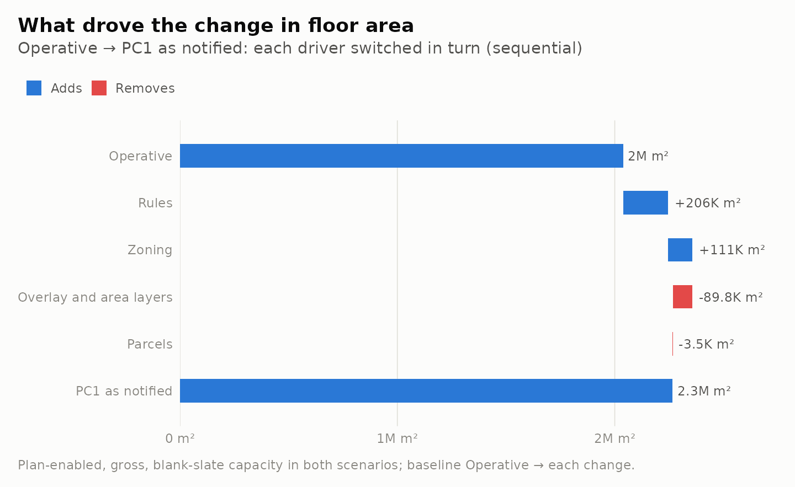
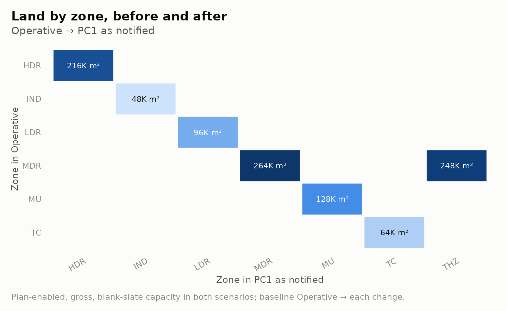
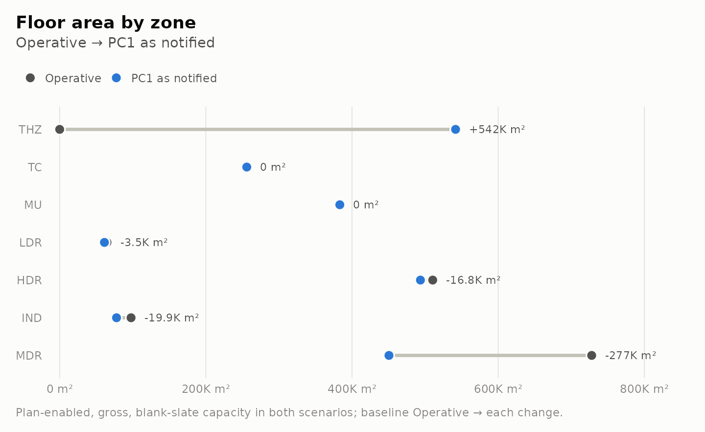
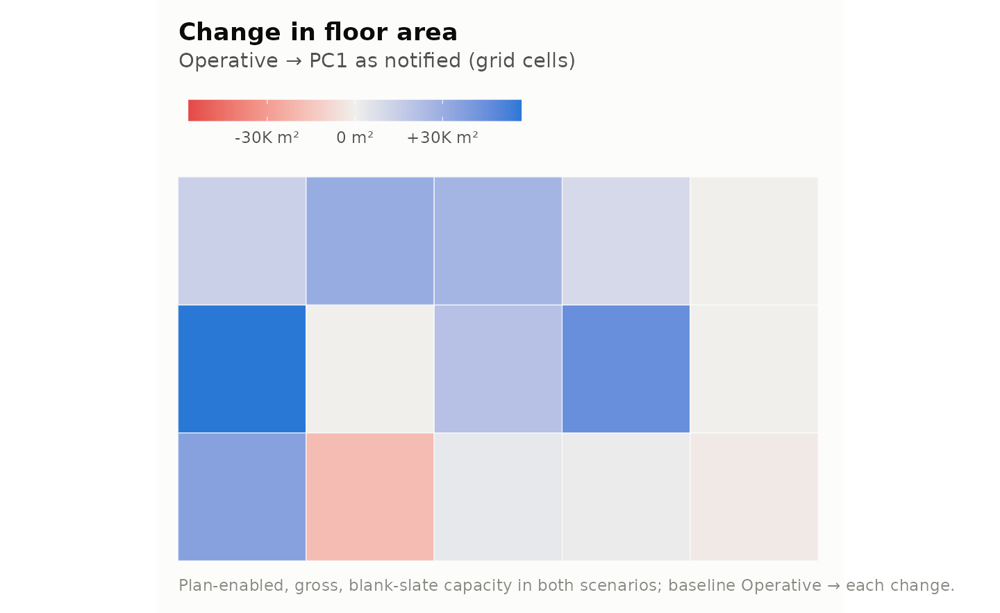

A plan change rarely moves one thing. Exampleton’s Plan Change 1 raises a height limit, creates a zone, rezones the blocks near the station, maps a wider flood plain and re-subdivides a block, all at once. This vignette compares it with the operative plan: what changed, where, and why.
library(plancap)
#>
#> Attaching package: 'plancap'
#> The following object is masked from 'package:stats':
#>
#> densityTwo scenarios
A scenario is everything that determines capacity. A plan change is written as a change from the baseline, naming only what differs:
town <- exampleton()
pc1 <- exampleton_pc1()
base <- scenario("Operative", rulebook_example("exampleton"),
parcels = town$parcels[town$parcels$parcel_type == "land", ],
roads = town$parcels[town$parcels$parcel_type == "road", ],
zoning = town$zoning,
layers = town[c("height_areas", "flood_hazard", "heritage", "trees",
"precincts", "transit")],
water = town$water, centrelines = town$road_centrelines)
change <- scenario_change(base, "PC1 as notified",
rulebook = pc1$rulebook,
zoning = pc1$zoning,
layers = list(flood_hazard = pc1$flood_hazard),
parcels = pc1$parcels[pc1$parcels$parcel_type == "land", ])
set <- scenario_set(base, change)
set
#> <plancap scenario set> 2 scenarios; baseline "Operative".
#> PC1 as notified: rulebook, parcels, zoning, layers differThe PC1 rulebook is a file that extends: the operative
one and states only its changes:
extends: exampleton.yaml
plan:
id: exampleton-pc1-2026
name: "Exampleton District Plan, Plan Change 1 (as notified)"
effective_date: "2026-09-01"
source: "Exampleton Plan Change 1 (fictional), notified 1 September 2026"
zone_map:
THZ: THZ
zone_families:
RESIDENTIAL: [LDR, MDR, THZ, HDR]
zones:
MDR:
height: {value: 16, occupiable: 15, roof_allowance: 1, storeys: 4,
source: "PC1 MDR-S1: 15 m, plus 1 m for a pitched roof"}
THZ:
label: Terraced Housing
method: volumetric
height: {value: 14, occupiable: 13, roof_allowance: 1, storeys: 4,
source: "PC1 THZ-S1: 13 m, plus 1 m for a pitched roof"}
setbacks:
- {kind: yard, distance: 1.5, boundaries: [road], source: "PC1 THZ-S3"}
- {kind: yard, distance: 20, boundaries: [riparian], source: "EDP NATC-S1"}
- {kind: plane, angle_deg: 60, start_height: 6, boundaries: [side, rear],
when: {beyond_frontage: 20}, source: "PC1 THZ-S2: beyond 20 m of the road"}
ratios:
coverage_max: {value: 0.6, source: "PC1 THZ-S4"}
landscaping_min: {value: 0.15, source: "PC1 THZ-S5"}
density: {min_dwelling_size: 35, source: "PC1 THZ-S8"}
use: {residential: true, business: false, residential_share: 1}
source: "PC1 Chapter THZ"The same set can be written as a manifest file and read with
read_scenarios(); the one for this example ships with the
package:
identical(names(read_scenarios(system.file("extdata", "exampleton_pc1_scenarios.yaml",
package = "plancap"))),
c("Operative", "PC1 as notified"))
#> [1] TRUEWhat changed in the inputs
diff_inputs(base, change)
#> <plancap input diff> inputs that differ: rulebook, parcels, zoning, layers.
#> 12 rule changes:
#> scope id rule applies_to from
#> zone MDR height <NA> 12; occupiable 11; 3 storeys
#> zone THZ method <NA> <NA>
#> zone THZ height <NA> <NA>
#> zone THZ setback:yard road <NA>
#> zone THZ setback:yard riparian <NA>
#> zone THZ setback:plane side, rear <NA>
#> zone THZ coverage_max <NA> <NA>
#> zone THZ landscaping_min <NA> <NA>
#> zone THZ density.min_dwelling_size <NA> <NA>
#> zone THZ use.residential <NA> <NA>
#> zone THZ use.business <NA> <NA>
#> zone THZ use.residential_share <NA> <NA>
#> to change
#> 16; occupiable 15; 4 storeys changed
#> volumetric added
#> 14; occupiable 13; 4 storeys added
#> 1.5 m added
#> 20 m added
#> 60 deg from 6 m added
#> 0.6 added
#> 0.15 added
#> 35 added
#> TRUE added
#> FALSE added
#> 1 added
#> Land rezoned:
#> from to area
#> MDR THZ 248,500
#> Layers changed:
#> layer change area
#> flood_hazard added 41,414
#> flood_hazard removed 0
#> Parcels: 19 only in the baseline, 26 only in the scenario.Running and comparing
run_scenarios() runs the baseline in full and the change
incrementally: only sites whose inputs differ are rebuilt.
res <- run_scenarios(set)
#> Operative: 6.2 s.
#> PC1 as notified: 5.3 s, 154 sites copied from the baseline.
cmp <- compare_scenarios(res)
cmp
#> <plancap comparison> baseline "Operative"
#> scenario sites land_area floor_area residential_floor_area dwellings
#> Operative 1,379 1,064,000 2,040,100 1,635,826 16,345
#> PC1 as notified 1,386 1,064,000 2,264,277 1,879,889 19,041
#>
#> ── PC1 as notified against Operative
#> floor_area: 2,040,100 to 2,264,277 (+224,177, +11.0%)
#> residential_floor_area: 1,635,826 to 1,879,889 (+244,063, +14.9%)
#> dwellings: 16,345 to 19,041 (+2,696, +16.5%)
#> Drivers of the floor area change: rules +206,042, zoning +111,360, layers
#> -89,764, parcels -3,461.
#> Sites: neighbour_effect 26, overlay_added 4, parcel_changed 19, rezoned 337,
#> rule_changed 373, unchanged 618.Why: the drivers
The change is split into its drivers by running intermediate scenarios that switch one driver at a time, in order (rules, then zoning, then overlay layers, then parcels). The drivers add exactly to the total change, and the rules driver splits further by the zones and overlays whose rules changed:
p <- cmp$pairs[[1]]
p$attribution
#> driver floor_area residential_floor_area dwellings
#> 1 rules 206042.085 206042.085 2215
#> 2 zoning 111359.786 111359.786 1198
#> 3 layers -89763.823 -69878.053 -727
#> 4 parcels -3461.114 -3461.114 10
p$rule_attribution
#> rule change floor_area residential_floor_area dwellings
#> 1 zone_map changed 0.0 0.0 0
#> 2 zone_families changed 0.0 0.0 0
#> 3 zones.MDR changed 206042.1 206042.1 2215
#> 4 zones.THZ added 0.0 0.0 0
plot_attribution(cmp)
Here PC1’s new MDR height adds floor area on every MDR site; the
rezoning to Terraced Housing adds more; the wider flood plain takes some
away; the re-subdivided block changes little.
attribution = "shapley" averages over every order instead,
at the cost of more runs. (With this plan change it warns: some orders
apply the new zoning before the new rules, so land is zoned to a zone
the old rulebook does not have.)
Where: zones, sites and areas
Zone transitions show land and capacity moving from each operative zone to each PC1 zone:
tr <- p$transitions
tr[tr$land_area > 1 & tr$from != tr$to, c("from", "to", "land_area", "floor_area_change", "dwellings_change")]
#> from to land_area floor_area_change dwellings_change
#> 9 MDR THZ 248500 188389.2 2042
plot_transitions(cmp)
plot_comparison(cmp)
Every baseline site carries its change and a reason:
table(p$sites$reason)
#>
#> neighbour_effect overlay_added parcel_changed rezoned
#> 26 4 19 337
#> rule_changed unchanged
#> 373 618
head(sf::st_drop_geometry(p$sites)[p$sites$reason == "rezoned",
c("unit", "zone_baseline", "zone_scenario", "floor_area_change")])
#> unit zone_baseline zone_scenario floor_area_change
#> 21 P00021 MDR THZ -1011.9917
#> 22 P00022 MDR THZ -956.4854
#> 23 P00023 MDR THZ -919.5151
#> 24 P00024 MDR THZ -704.7160
#> 25 P00025 MDR THZ -499.1993
#> 26 P00026 MDR THZ 0.0000Where the parcels changed (the re-subdivided block), the new lots’
capacity is apportioned to the old parcels by area, so the change still
has a place. A common geography (areas = or
grid =) is always comparable:
cmp_grid <- compare_scenarios(res, grid = 400, attribution = "none")
g <- cmp_grid$pairs[[1]]$by_grid
g[order(-g$floor_area_change), c("grid", "floor_area_baseline", "floor_area_scenario", "floor_area_change")][1:5, ]
#> Simple feature collection with 5 features and 4 fields
#> Geometry type: POLYGON
#> Dimension: XY
#> Bounding box: xmin: 2200000 ymin: 5600000 xmax: 2201600 ymax: 5601200
#> Projected CRS: NZGD2000 / New Zealand Transverse Mercator 2000
#> grid floor_area_baseline floor_area_scenario floor_area_change
#> 2 5500_14001 154892.58 211754.46 56861.88
#> 11 5503_14001 150611.57 195388.45 44776.88
#> 1 5500_14000 148176.02 184367.95 36191.93
#> 6 5501_14002 51812.44 82745.91 30933.47
#> 9 5502_14002 51126.62 77615.82 26489.21
#> geometry
#> 2 POLYGON ((2200000 5600400, ...
#> 11 POLYGON ((2201200 5600400, ...
#> 1 POLYGON ((2200000 5600000, ...
#> 6 POLYGON ((2200400 5600800, ...
#> 9 POLYGON ((2200800 5600800, ...
plot_change_map(cmp_grid, on = "grid")
Checking it adds up
check_comparison(cmp)
#> ✔ Operative -> PC1 as notified: drivers sum to the change in floor_area: 224176.93 of 224176.93
#> ✔ Operative -> PC1 as notified: transitions reproduce floor_area:
#> ✔ Operative -> PC1 as notified: zones reproduce floor_area:
#> ✔ Operative -> PC1 as notified: height bands reproduce floor_area:
#> ✔ Operative -> PC1 as notified: sites reproduce floor_area: 2264277.34 of 2264277.34
#> ✔ Operative -> PC1 as notified: drivers sum to the change in dwellings: 2696.00 of 2696.00
#> ✔ Operative -> PC1 as notified: transitions reproduce dwellings:
#> ✔ Operative -> PC1 as notified: zones reproduce dwellings:
#> ✔ Operative -> PC1 as notified: height bands reproduce dwellings:
#> ✔ Operative -> PC1 as notified: sites reproduce dwellings: 19041.00 of 19041.00
#> ✔ Operative -> PC1 as notified: land reconciles: 1064000 to 1064000 m2 (0 only in the baseline, 0 only in the scenario)